数据库的完整性是指：
-
数据的正确性
数据是符合现实世界语义，反映了当前实际状况的。
-
数据的相容性
数据库同一对象在不同关系表中的数据是符合逻辑的。
数据的完整性和安全性是两个不同概念：
-
数据的完整性
防止数据库中存在不符合语义的数据，也就是防止数据库中存在不正确的数据。
防范对象：不合语义的、不正确的数据
-
数据的安全性
保护数据库 防止恶意的破坏和非法的存取。
防范对象：非法用户和非法操作
为维护数据库的完整性，数据库管理系统必须：
- 提供定义完整性约束条件的机制
- 提供完整性检查的方法
- 违约处理
实体完整性
定义
关系模型的实体完整性在CREATE TABLE中用PRIMARY KEY定义。
单属性构成的码有两种说明方法：
-
定义为列级约束条件
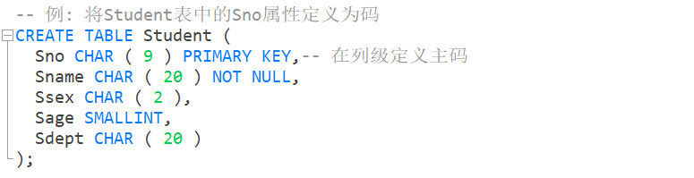
-
定义为表级约束条件
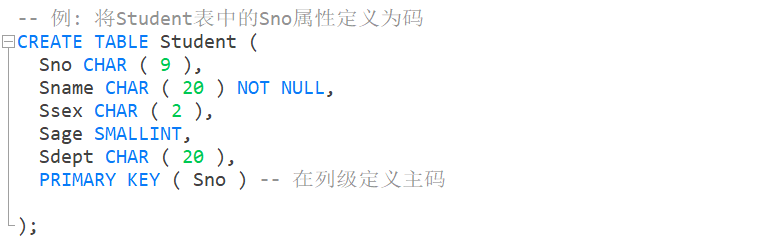
对多个属性构成的码只有一种说明方法：
-
定义为表级约束条件
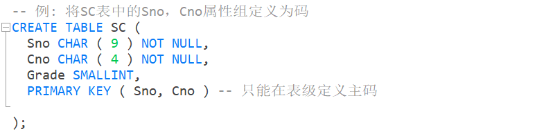
实体完整性检查和违约处理
插入或对主码列进行更新操作时，关系数据库管理系统按照实体完整性规则自动进行检查。包括：
- 检查主码值是否唯一，如果不唯一则拒绝插入或修改
- 检查主码的各个属性是否为空，只要有一个为空就拒绝插入或修改
检查记录中主码值是否唯一的一种方法是进行全表扫描，依次判断表中每一条记录的主码值与将插入记录上的主码值（或者修改的新主码值）是否相同。
表扫描的缺点是十分耗时，为避免对基本表进行全表扫描，关系数据库管理系统一般都在主码上自动建立一个索引，例如下图的B+树索引。
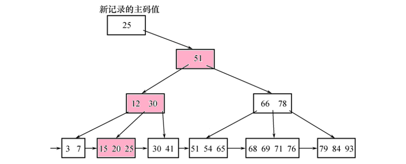
参照完整性
定义
关系模型的参照完整性在CREATE TABLE中用FOREIGN KEY短语定义哪些列为外码，用REFERENCES短语指明这些外码参照哪些表的主码。
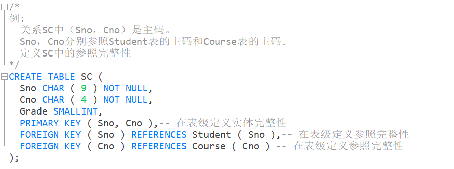
参照完整性检查和违约处理
一个参照完整性将两个表中的相应元组联系起来。
对被参照表和参照表进行增删改操作时有可能破坏参照完整性，必须进行检查。
例如，对表SC和Student有四种可能破坏参照完整性的情况：
SC表中增加一个元组，
该元组的Sno属性的值在表Student中找不到一个元组，其Sno属性的值与之相等。
修改SC表中的一个元组，
修改后该元组的Sno属性的值在表Student中找不到一个元组，其Sno属性的值与之相等。
从Student表中删除一个元组，
造成SC表中某些元组的Sno属性的值在表Student中找不到一个元组，其Sno属性的值与之相等。
修改Student表中一个元组的Sno属性，
造成SC表中某些元组的Sno属性的值在表Student中找不到一个元组，其Sno属性的值与之相等。
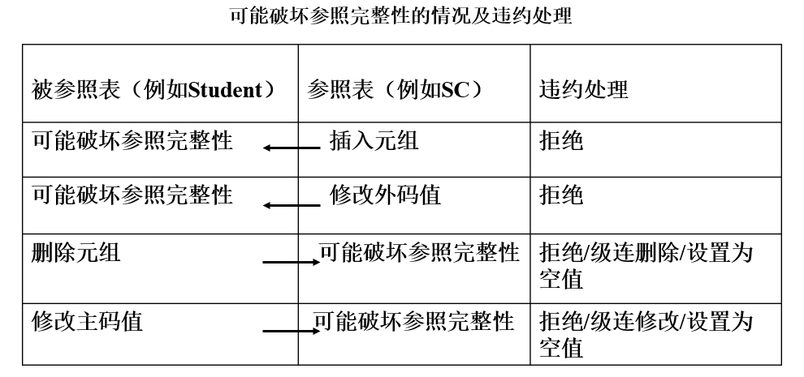
参照完整性违约处理
-
拒绝（NO ACTION）执行
不允许该操作执行，该策略一般设置为默认策略。
-
级联（CASCADE）操作
当删除或修改被参照表的一个元组造成了与参照表的不一致，则删除或修改参照表中的所有造成不一致的元组。
-
设置为空值（SET-NULL）
当删除或修改被参照表的一个元组时造成了不一致，则将参照表中的所有造成不一致的元组的对应属性设置为空值。
对于参照完整性，除了应该定义外码，还应定义外码列是否允许空值。
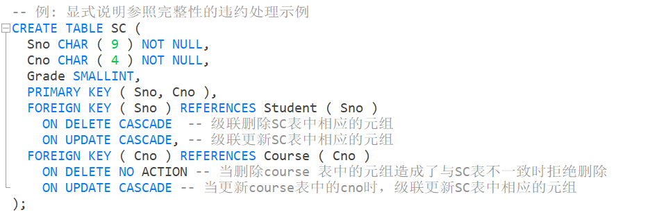
用户定义的完整性
用户定义的完整性是针对某一具体应用的数据必须满足的语义要求。
关系数据库管理系统提供了定义和检验用户定义完整性的机制，不必由应用程序承担。
属性上的约束条件
在CREATE TABLE时定义属性上的约束条件有：
- 列值非空（NOT NULL）
- 列值唯一（UNIQUE）
- 检查列值是否满足一个条件表达式（CHECK）
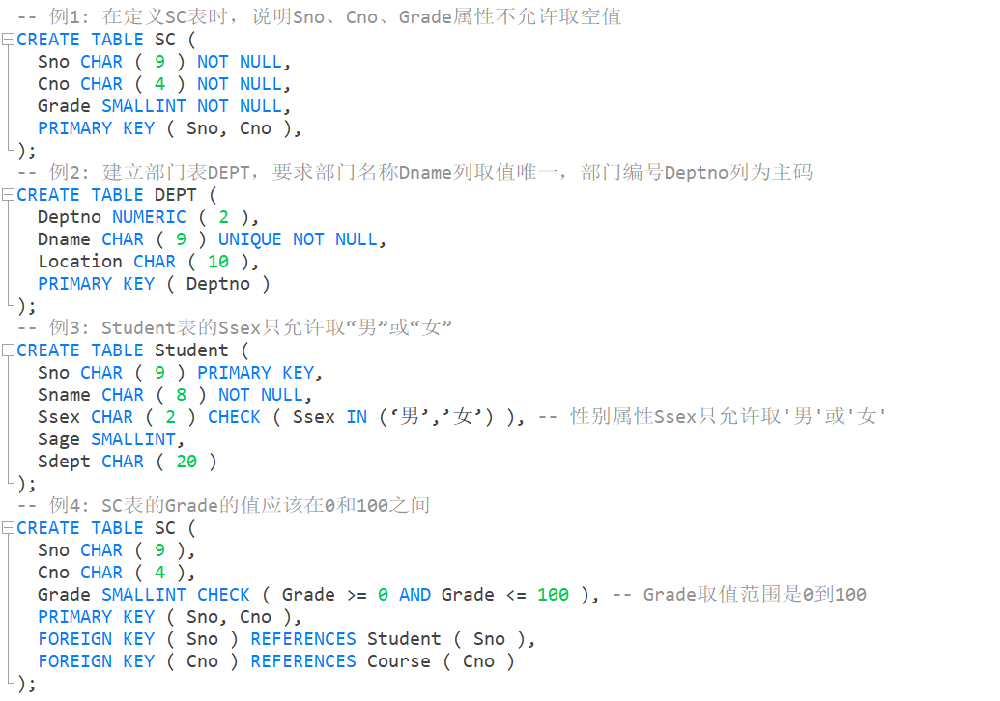
插入元组或修改属性的值时，关系数据库管理系统检查属性上的约束条件是否被满足，如果不满足则操作被拒绝执行。
元组上的约束条件
在CREATE TABLE时可以用CHECK短语定义元组上的约束条件，即元组级的限制。
同属性值限制相比，元组级的限制可以设置不同属性之间的取值的相互约束条件。
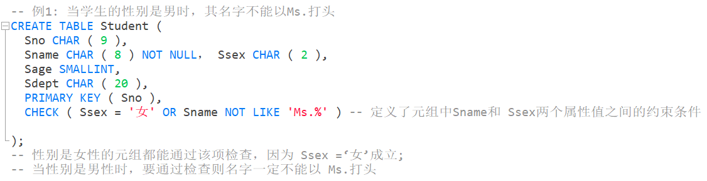
插入元组或修改属性的值时，关系数据库管理系统检查元组上的约束条件是否被满足，如果不满足则操作被拒绝执行。
完整性约束命名字句
SQL在CREATE TABLE语句中提供了完整性约束命名子句CONSTRAINT，用来对完整性约束条件命名。从而可以灵活增加删除一个完整性约束条件。
完整性约束命名子句：
CONSTRAINT <完整性约束条件名> <完整性约束条件><完整性约束条件>包括NOT NULL、UNIQUE、PRIMARY KEY短语、FOREIGN KEY短语、CHECK短语等。
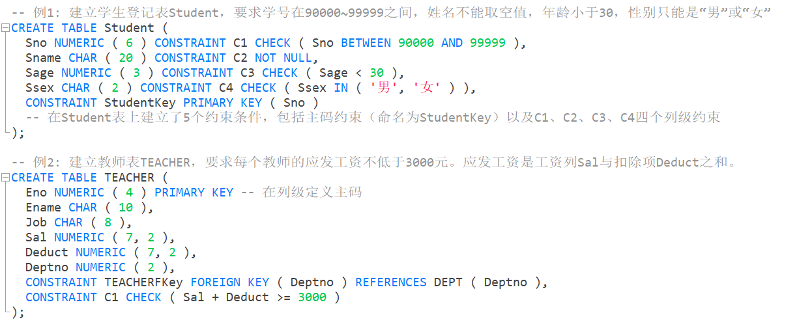
使用ALTER TABLE语句修改表中的完整性限制。
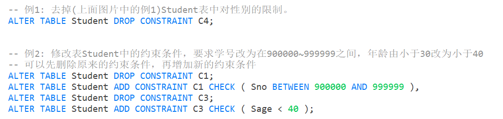
断言
SQL中，可以使用CREATE ASSERTION语句，通过声明性断言来指定更具一般性的约束。
可以定义涉及多个表的或聚集操作的比较复杂的完整性约束。
断言创建以后，任何对断言中所涉及的关系的操作都会触发关系数据库管理系统对断言的检查，任何使断言不为真值的操作都会被拒绝执行。
创建断言
CREATE ASSERTION<断言名> <CHECK 子句>每个断言都被赋予一个名字，<CHECK 子句>中的约束条件与WHERE子句的条件表达式类似。
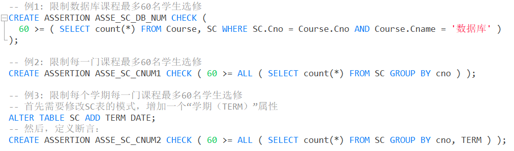
删除断言
DROP ASSERTION <断言名>;如果断言很复杂，则系统在检测和维护断言的开销较高，这是在使用断言时应该注意的
触发器
触发器（Trigger）是用户定义在关系表上的一类由事件驱动的特殊过程。
触发器保存在数据库服务器中。
任何用户对表的增、删、改操作均由服务器自动激活相应的触发器。
触发器可以实施更为复杂的检查和操作，具有更精细和更强大的数据控制能力。
定义触发器
触发器又叫做事件-条件-动作规则。
当特定的系统事件发生时，对规则的条件进行检查，如果条件成立则执行规则中的动作，否则不执行该动作。
格式：
CREATE TRIGGER <触发器名>
{BEFORE | AFTER} <触发事件> ON <表名>
REFERENCING NEW|OLD ROW AS<变量>
FOR EACH {ROW | STATEMENT}
[WHEN <触发条件>]<触发动作体>-
表的拥有者才可以在表上创建触发器
-
触发器名
触发器名可以包含模式名，也可以不包含模式名。
同一模式下，触发器名必须是唯一的，触发器名和表名必须在同一模式下。
-
表名 触发器只能定义在基本表上，不能定义在视图上。
当基本表的数据发生变化时，将激活定义在该表上相应触发事件的触发器。
-
触发事件 触发事件可以是
INSERT、DELETE或UPDATE，也可以是这几个事件的组合，还可以UPDATE OF<触发列, ...>，即进一步指明修改哪些列时激活触发器。AFTER/BEFORE是触发的时机，AFTER表示在触发事件的操作执行之后激活触发器，BEFORE表示在触发事件的操作执行之前激活触发器。 -
触发器类型
触发器按照所触发动作的时间间隔尺寸可以分为：行级触发器（FOR EACH ROW），语句级触发器（FOR EACH STATEMENT）。
-
触发条件
触发器被激活时，只有当触发条件为真时触发动作体才执行，否则触发动作体不执行。如果省略WHEN触发条件，则触发动作体在触发器激活后立即执行。
-
触发动作体
触发动作体可以是一个匿名PL/SQL过程块，也可以是对已创建存储过程的调用。
如果是行级触发器，用户都可以在过程体中使用NEW和OLD引用事件之后的新值和事件之前的旧值；如果是语句级触发器，则不能在触发动作体中使用NEW或OLD进行引用。
如果触发动作体执行失败，激活触发器的事件就会终止执行，触发器的目标表或触发器可能影响的其他对象不发生任何变化 。
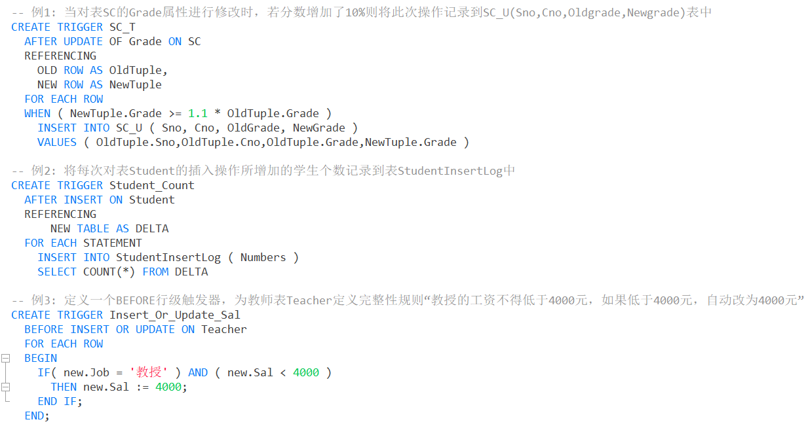
激活触发器
触发器的执行，是由触发事件激活的，并由数据库服务器自动执行。
一个数据表上可能定义了多个触发器，遵循如下的执行顺序：
- 执行该表上的BEFORE触发器；
- 激活触发器的SQL语句；
- 执行该表上的AFTER触发器；
删除触发器
格式：
DROP TRIGGER <触发器名> ON <表名>;触发器必须是一个已经创建的触发器，并且只能由具有相应权限的用户删除。